06 - Contraste
O contraste é uma das maneiras mais eficazes de acrescentar algum atrativo visual a uma página (algo que realmente faça que o leitor queira olhar para ela), criando uma hierarquia organizacional entre diferentes elementos. A regra importante que deve ser lembrada é a de que para o contraste ser realmente eficaz, ele deve ser forte. Não seja tímido.
Cria-se o contraste quando dois elementos são diferentes. Se eles diferirem um pouco mas não muito, não acontecerá o contraste e sim o conflito. Este é o segredo: segundo o princípio do contraste, se dois itens não forem exatamente os mesmos, diferencie-os completamente.
Podemos alcançar o contraste de várias maneiras. Uma letra grande pode ser contrastada com uma pequena; uma fonte em estilo antigo com uma fonte em bold sem serifa; um fio fino com um grosso; uma cor fria com uma mais quente; uma textura áspera com uma lisa; um elemento horizontal (por exemplo, uma longa linha de texto) com um elemento vertical (por exemplo, uma coluna estreita de texto); linhas muito espaçadas com linhas bem espaçadas com linhas bem próximas; uma figura pequena com uma figura grande.
Basta não ser tímido e ousar. Não se pode contrastar um fio de meio ponto com um de 1 ponto. Não se pode contrastar o marrom-escuro com o preto. Faça direito.
Se os dois “newsletters” apresentados a seguir aparecessem sobre sua mesa, qual deles você pegaria primeiro? Ambos têm o mesmo layout básico. Ambos são estéticos e simpáticos. Ambos têm as mesmas informações. Na verdade, existe apenas uma diferença: o segundo tem mais contraste.
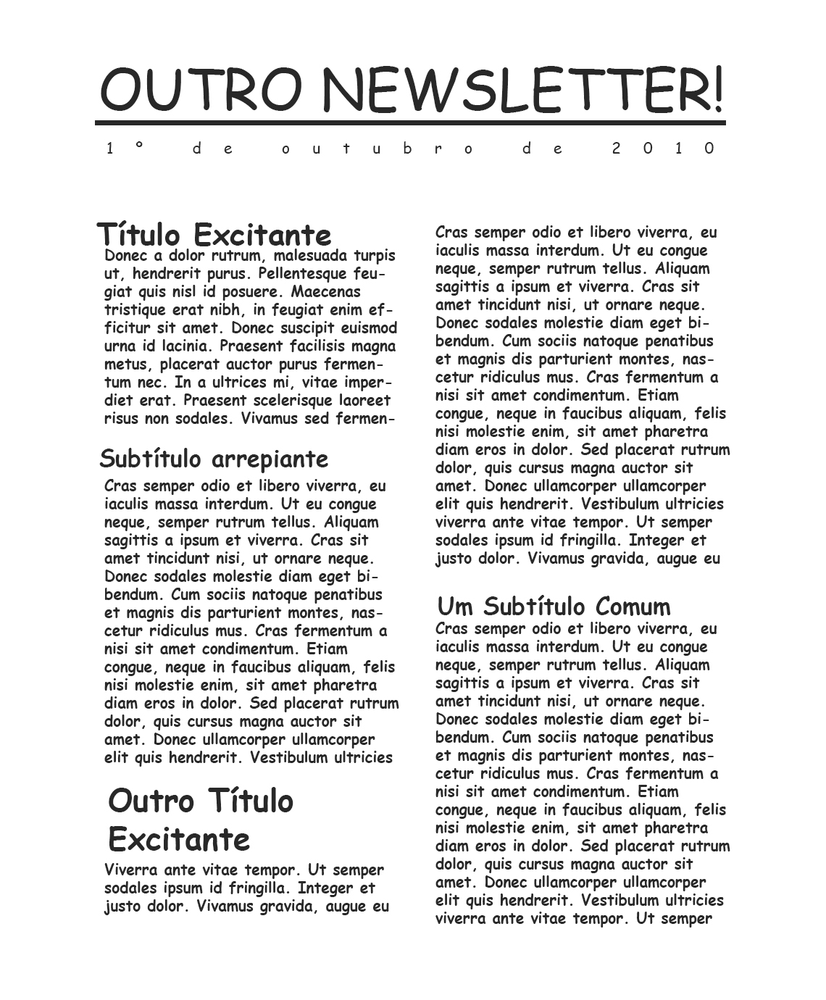
Esta opção está boa, mas nada atrai seus olhos para o material. Se os olhos das pessoas não forem atraídos para o material, elas não irão lê-lo.
A fonte do contraste a seguir é óbvia. Utilizei uma fonte mais pesada e com mais negrito nos títulos e subtítulos. Repeti essa fonte (seguindo o princípio da repetição; lembra-se dele?) no título do newsletter. Quando mudei o título de caixa alta para caixa alta e baixa, pude utilizar um tamanho maior e aumentar o negrito, o que também ajuda a reforçar o contraste. E como agora os títulos têm peso, foi possível acrescentar uma caixa preta na parte superior, atrás do título, repetindo novamente a cor escura e reforçando o contraste.
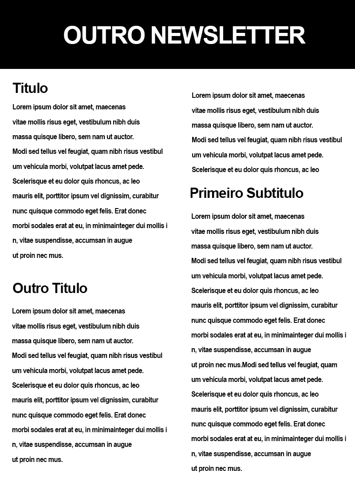
Você concorda que seus olhos se fixaram mais nesta página do que na anterior?
O contraste é um ponto crítico na organização das informações; o leitor sempre deverá ser capaz de, à primeira passada de olhos sobre um material, compreender imediatamente o que ele representa.
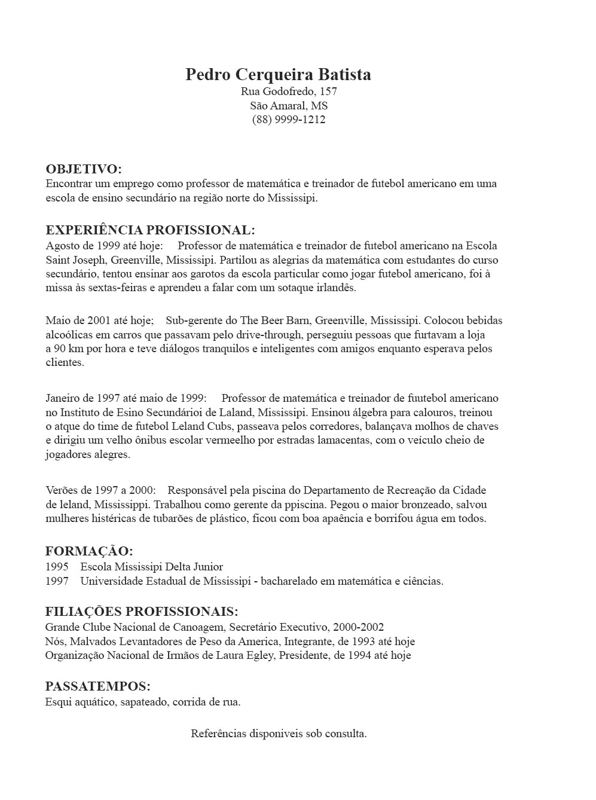
Este é um currículo típico. Todas as informações estão ali, e se alguém quiser realmente lê-las, poderá fazê-lo. Porém, na verdade, este material não se destaca nem chama atenção.
Observe os seguintes problemas:
Há dois alinhamentos na página: o centralizado e o à esquerda.
Os espaços entre os segmentos separados são parecidos demais.
Os nomes dos cursos complementares se fundem ao da instituição em que foram feitos.
Veja: além de a página ficar mais interessante com o uso do contraste, o propósito e a organização do trabalho estão mais claros.
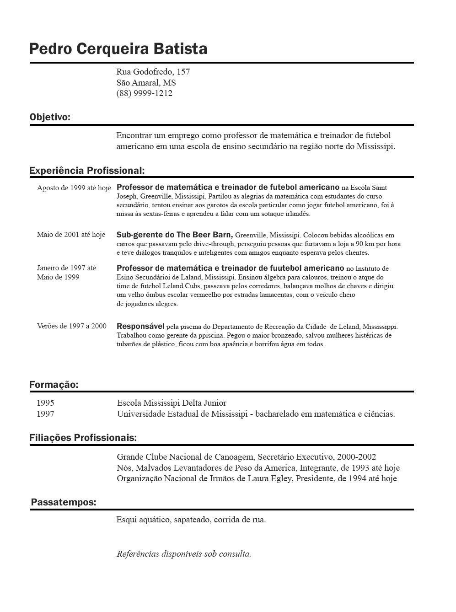
Os problemas foram facilmente corrigidos.
Um alinhamento à esquerda; como você pode ver acima, usar apenas um alinhamento não significa que tudo esteja alinhado no mesmo canto, mas que usamos o mesmo alinhamento em tudo. Ambas as linhas com alinhamento à esquerda são muito marcantes e reforçam uma à outra (alinhamento e repetição).
Os títulos estão fortes. Sabemos de imediato o que este material contém e quais são seus pontos-chave (contraste).
Os segmentos estão separados com mais espaço do que as linhas isoladas de texto dentro de cada segmento (contraste de relações espaciais; proximidade).
Os títulos de graduação e de trabalhos estão em bold (uma repetição da fonte do título); o forte contraste permite que os pontos importantes sejam notados.
A maneira mais fácil de acrescentar contraste a um material para torná-lo interessante é trabalhar com as fontes (este é o tema principal abordado na segunda metade desse livro). Mas não se esqueça dos fios, do espaçamento entre os elementos, das texturas etc.
Se você utilizar um fio fino (chamado hairline, fio de cabelo) entre as colunas, utilize um fio mais forte de 2 ou 4 pontos quando precisar usar outro fio; não coloque um fio de meio ponto e um de 1 ponto na mesma página. Se você aplicar uma segunda cor para acentuar o trabalho, assegure-se de que as cores se contrastam: o marrom-escuro e o azul-escuro não contrastam eficientemente com o texto em preto.
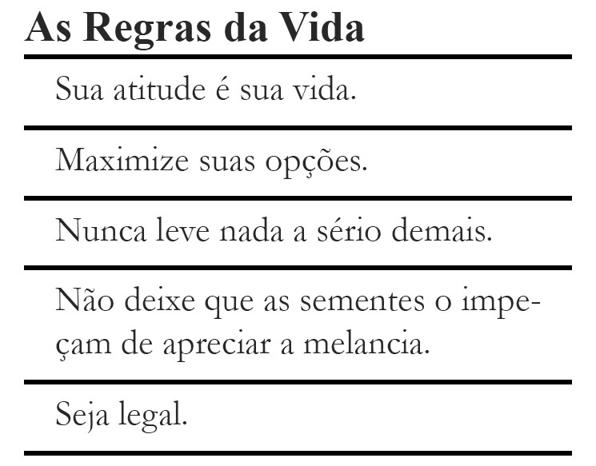
Neste caso, há um pouco de contraste entre as fontes e os fios (linhas), mas o contraste está confuso. Será que os fios deveriam ter duas espessuras diferentes?
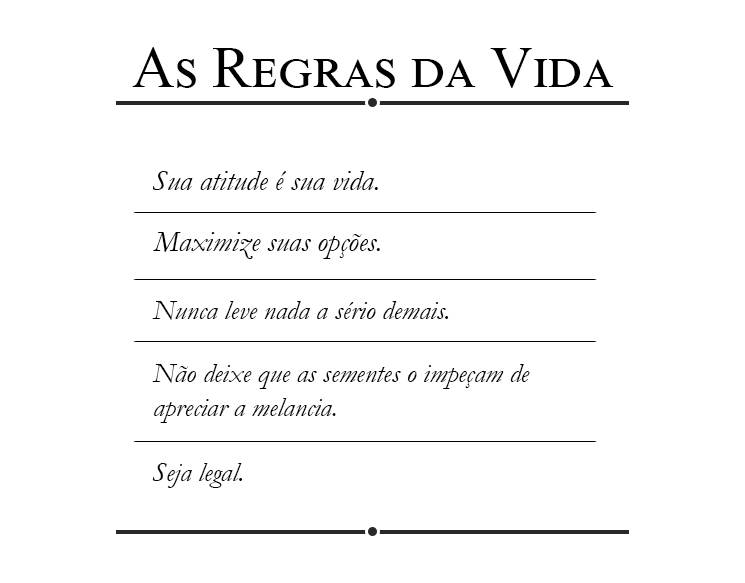
Agora o forte contraste entre as fontes deixa o material muito mais dinâmico e atrativo.
Com uma diferença maior entre as espessuras dos fios, não há risco de alguém achar que há um erro.
O bloco inteiro ficou mais marcante e sofisticado; sabemos onde começa e onde termina.
Se você utilizar colunas altas e estreitas em seu newsletter, faça alguns títulos mais fortes para criar um direcionamento horizontal contrastante a página.
Combine o contraste com a repetição, como na numeração das páginas, nos títulos, nos sinais de tópico ou na distribuição espacial, para criar uma identidade visual forte e unificada na publicação inteira.
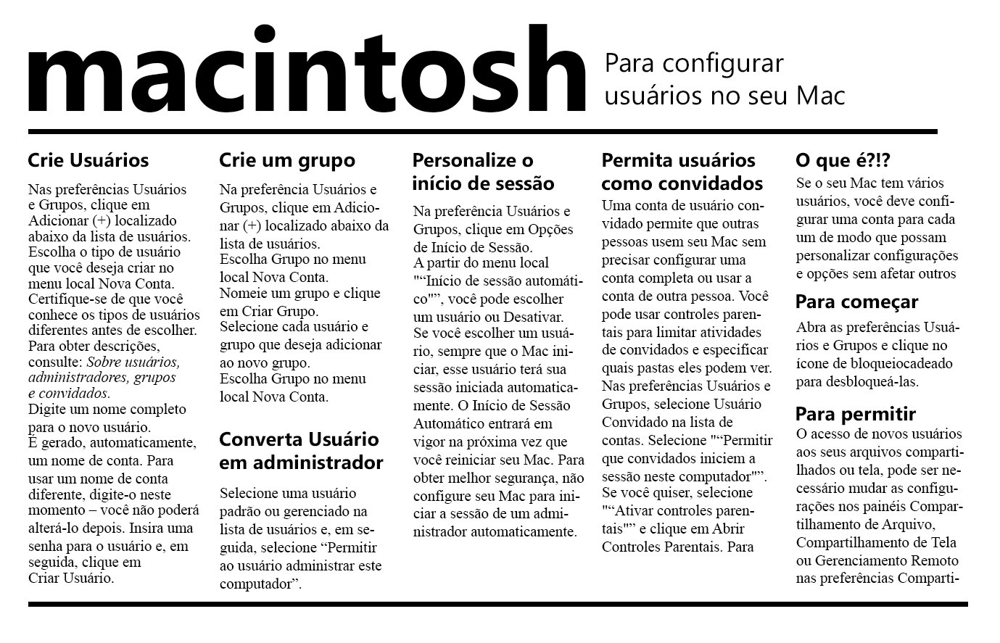
Além do contraste existe entre as fontes deste cartão postal, também há um contraste entre o título horizontal (longo) e as colunas verticais (estreitas).
As colunas estreitas são um elemento repetitivo, assim como um exemplo de contraste.
O exemplo apresentado a seguir é um típico anúncio de lista telefônica. Um dos problemas é que basicamente tudo está do mesmo tamanho, com mesmo peso e com a mesma atribuição de importância. Visualmente, o item “Membro da Associação de Intercâmbio de Construtores” está com o mesmo peso de “Especialistas em Reformas e Consertos”. Está correto? Estabeleça qual deve ser o item principal. Use contraste para criar esse enfoque. Destaque-o com alinhamentos marcantes e aplique a proximidade.
Por onde você começaria a melhorar este anúncio?
Escolha um foco, aumente seu tamanho e use o bold.
Coloque as letras em caixa-alta e baixa e não todas em caixa-alta.
Estabeleça conjuntos de informações e agrupe os itens (proximidade), deixando espaços entre os grupos para indicar suas relações.
Organize todos esses elementos, dispondo-os em um alinhamento marcante.
Elimine elementos conflitantes:
O contorno do anúncio não é um ponto de foco principal; então por que deixá-lo tão forte?
As estrelas chamam muita atenção; dirigia a atenção para o real objetivo do anúncio.
Não há nada errado com cantos vazios. Uma única águia já é o suficiente;
Não tenha medo de diminuir alguns itens para criar um contraste com os elementos maiores e deixar espaços em branco. Quando você atrair a atenção do leitor para o ponto principal, se ele estiver realmente interessado, lerá o texto em letras menores. Mas se ele não estiver interessado, não importa o tamanho que você colocar; ele não o lerá.
Observe que todos os outros princípios são aplicados: proximidade, alinhamento e repetição. Eles trabalham juntos para criar o efeito total. É raro ajustar apenas um dos princípios do design (na diagramação) de um material.
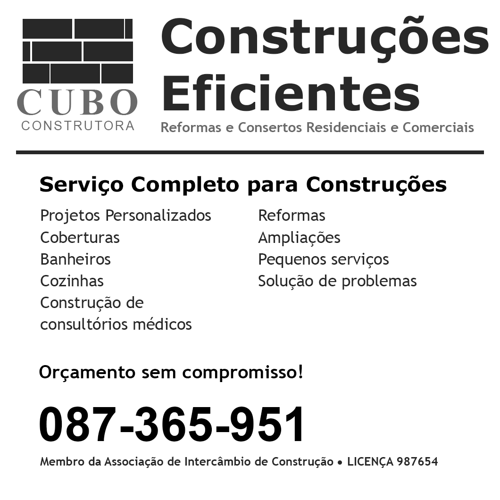
Uma pessoa pode achar que este anúncio não reflete a personalidade do dono do negócio, como acontece no anúncio anterior. Mas se este anúncio tem como finalidade atrair as pessoas que desejam gastar dinheiro, qual deles transmite ao interessado uma sensação mais profissional e segura?
Observe como e onde a repetição é aplicada, assim como o contraste. Já que este é um anúncio de lista telefônica, existe uma lógica na repetição da fonte em bold e do corpo grande no número de telefone.
O contraste é o mais divertido dos princípios de planejamento visual (e o mais dramático!). Pequenas alterações fazem o design passar de comum a marcante.
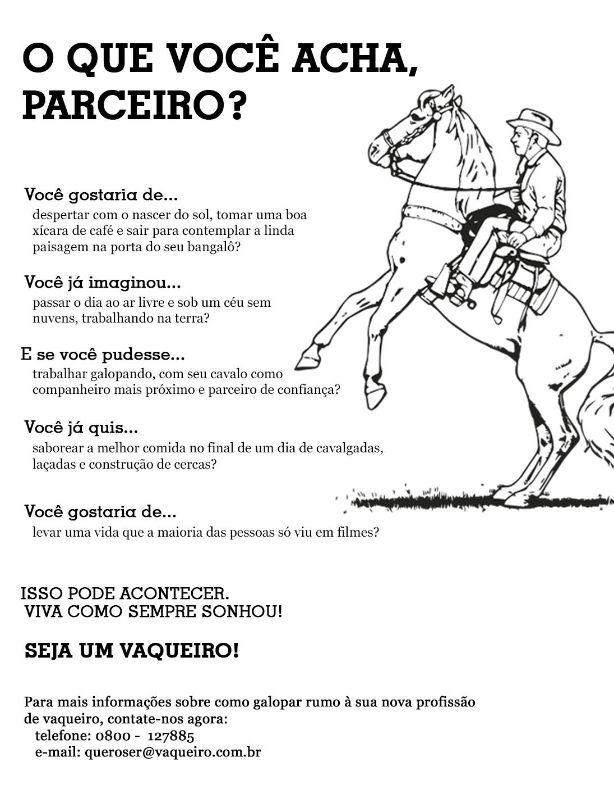
Lembra do anúncio de vaqueiro do capítulo 2? Aqui está ele novamente, ainda um pouco sem vida. Agora olhe para o mesmo anúncio na próxima página, depois de alguns contrastes.
Você consegue classificar pelo menos quatro formas de contraste?
Qual dos anúncios seria o escolhido para uma segunda olhada? Este é o poder do contraste. Bastam algumas pequenas mudanças e a diferença é incrível!
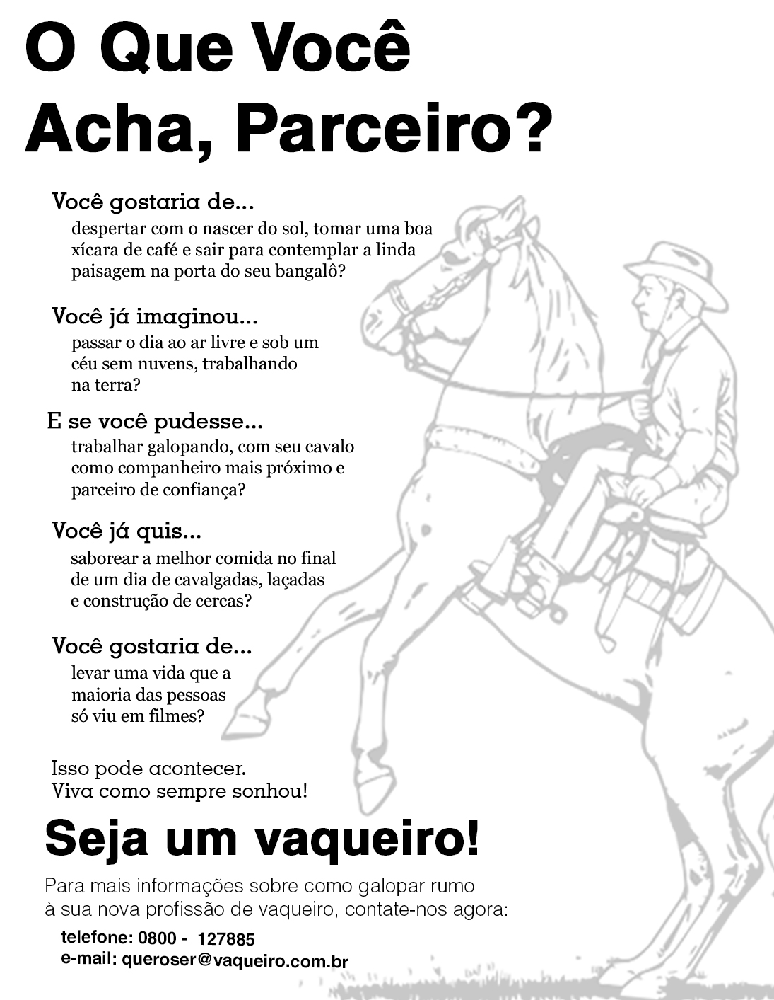
Mudando o título de caixa-alta para caixa-alta e baixa, sobrou mais espaço para que ele ficasse maior e mais forte. Como repetição, usei a mesma fonte da frase “Seja um vaqueiro!”, na parte inferior do anúncio. Os textos entre as frases estão maiores e mais fortes; assim, aparecem um pouco mais.
E por que não fazer um vaqueiro bem grande? Não seja tímido! Apesar de grande, ele está numa tonalidade bem clara, para não conflitar com o título.
O contraste não é o único conceito que precisa ser enfatizado, mas é comum descobrirmos que ao aplicarmos o contraste, os outros conceitos precisam encaixar-se. Por exemplo, seus elementos de contraste podem, às vezes, ser usados como elementos de repetição.
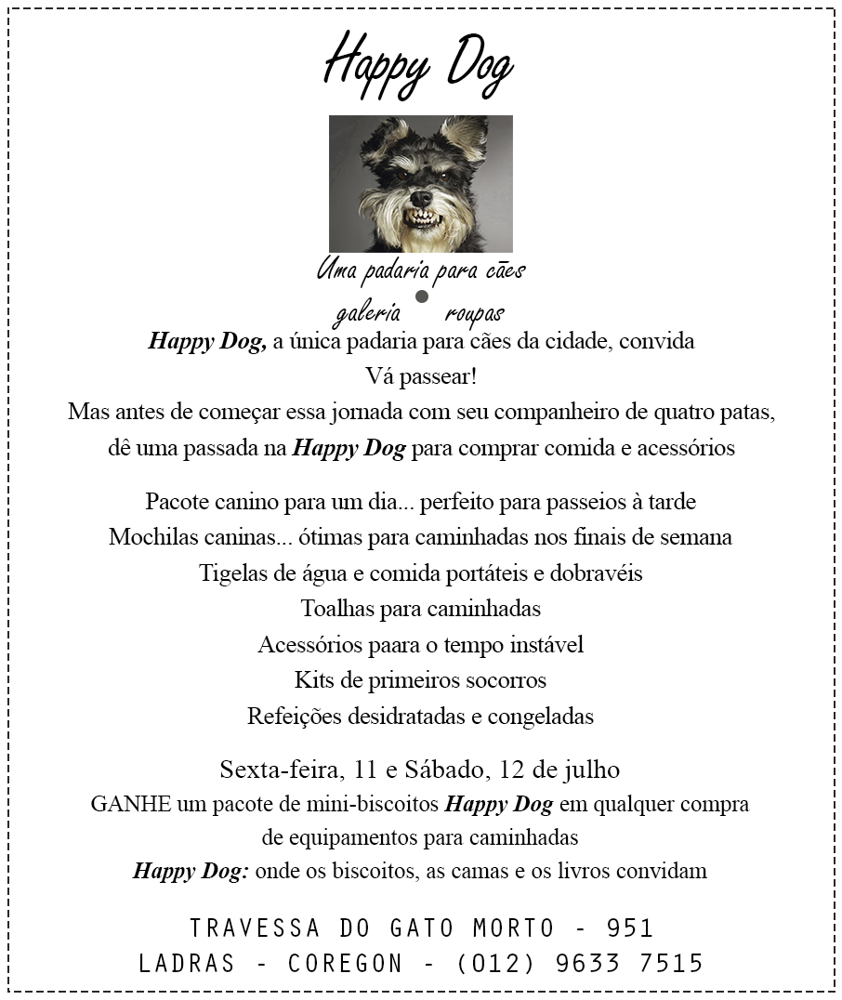
Este anúncio foi publicado num jornal de bairro. Além do alinhamento centralizado, da falta de proximidade e repetição, e da fonte comum, ele não tem contraste. Não há nada em sua diagramação que realmente convide à leitura do texto. A foto do cachorro é uma graça, mas é só.
Há alguns sinais de contraste e repetição (você pode vê-los?), mas são bem sutis. Quem criou o material está se esforçando, mas ainda está muito tímido.
Tenho certeza de que você deve ter visto (ou criado) muitas peças assim. Tudo bem. Agora você sabe mais.
É verdade que o anúncio a seguir parece uma virada radical, comparado ao da página anterior, mas ele é apenas o resultado do uso metódico dos quatro princípios básicos.
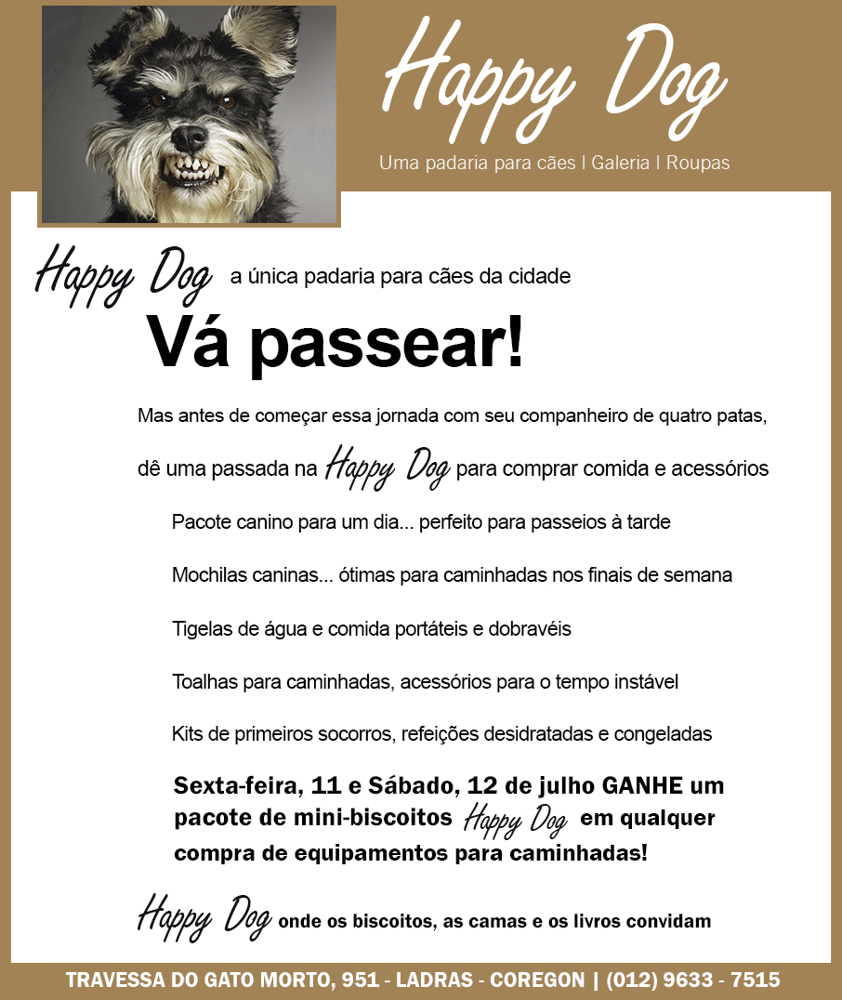
Pronto! Esses são os passos para que o anúncio à direita comece a ficar parecido com a versão acima.
Pare de usar somente fontes como a Times Roman, Arial e Helvética. Simplesmente elimine-as das suas opções de fontes. Acredite em mim. (Por favor, desista também da Sand.)
Não use o alinhamento centralizado. Sei que é difícil, mas você precisa fazê-lo. Quando sua percepção ficar mais aguçada, você poderá voltar a fazer testes com esse alinhamento.
Encontre o elemento mais interessante da página, ou o mais importante, e enfatize-o! Nesse caso, o mais interessante é a foto do cachorro e o mais importante, o nome da loja. Para quê fazer um anúncio da loja se ninguém sabe qual é o nome? Agrupe os elementos mais importantes, para que o leitor não perca o foco.
Agrupe as informações seguindo a proximidade lógica. Use o espaço para distanciar os elementos ou conectá-los.
Descubra elementos que possam ser repetidos.
Tenho certeza de que você ficará surpreso com o que pode criar assim.
O exemplo a seguir é o mesmo do Capítulo 2, no qual abordamos a proximidade. Ele está bom, limpo, mas na próxima página fica evidente o quanto um pouco de contraste pode ajudar.
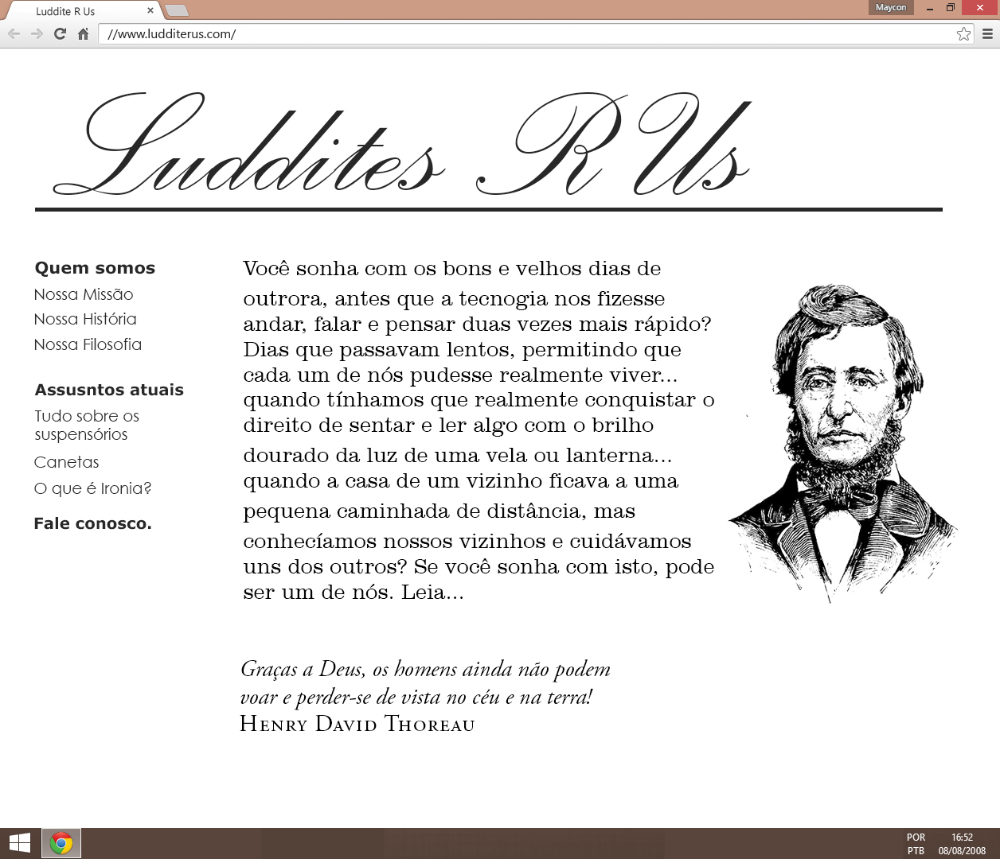
Há um pouco de contraste neste site, mas podemos melhorá-lo ainda mais aplicando o princípio do contraste em outros elementos. Como criar contraste na cor? E no tamanho?
Espero que você esteja começando a ver como o contraste é importante para o design de uma peça e como é fácil criá-lo. Basta estar atento. Uma vez utilizando o contraste, seus elementos podem ser aplicados na repetição.
Apenas coloquei um pouco de preto (ou uma cor escura) no fundo e ampliei a ilustração. A página ficou muito mais dinâmica e interessante de se olhar.